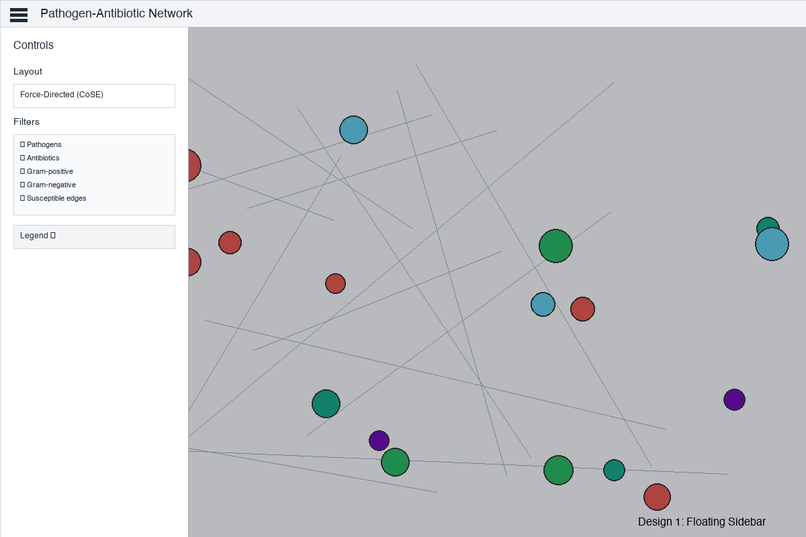
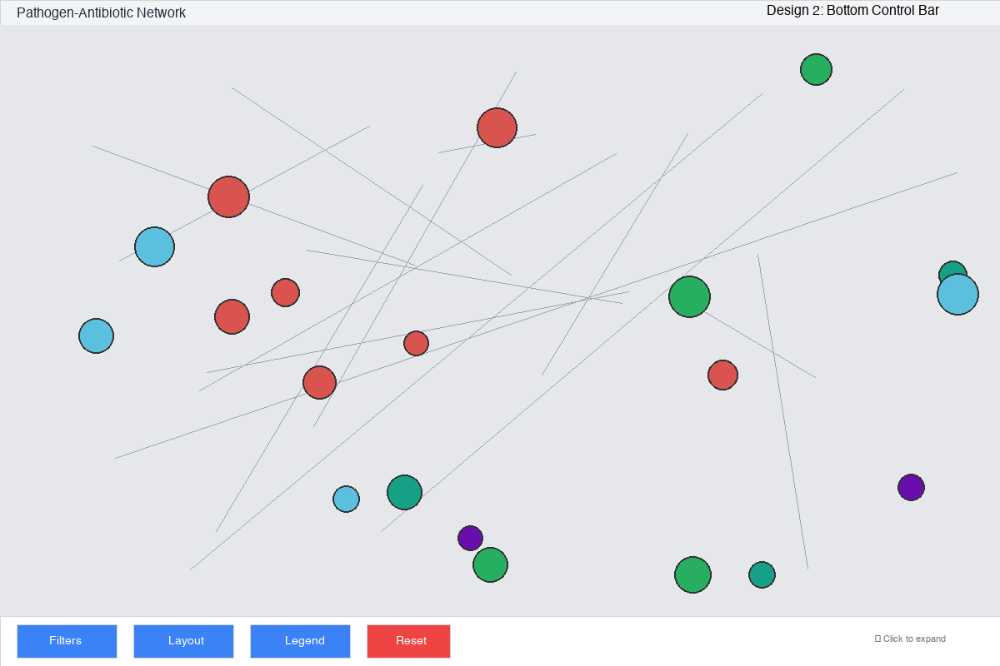

This document presents three professionally designed UI mockups for reorganizing the Pathogen-Antibiotic Network Visualization interface. Each design prioritizes the Cytoscape visualization while organizing controls and information panels for optimal usability.
⚠️ Current Layout Challenges
Limited visualization space: Controls take up ~200px of vertical space (25% of screen)
Visual clutter: Multiple control sections compete for attention above the network
Fixed layout: No way to maximize visualization space when controls aren't needed
Scroll fatigue: Users must scroll through controls to see the full network
Design Goal: Maximize visualization space while maintaining easy access to filtering, layout, and legend controls through modern, intuitive UI patterns.
Design 1: Floating Sidebar Dashboard
⭐ RECOMMENDED

Concept
A modern, full-screen visualization with a collapsible sidebar panel that slides in from the left. The sidebar contains all controls organized vertically with scrolling capability. When open, a semi-transparent backdrop focuses attention on the control panel while keeping the network visible.
🎯 Key Features
Hamburger menu toggle in minimal header (40px)
280px width sidebar with smooth slide animation
Full-screen network visualization
Semi-transparent backdrop when sidebar open
Scrollable sidebar for all controls
📱 User Experience
Default state: sidebar hidden, full network visible
Click hamburger icon: sidebar slides in smoothly
Click backdrop or close: sidebar slides out
Mobile-responsive design pattern
Keyboard accessible (ESC to close)
🛠️ Implementation
React state for sidebar open/close
CSS transitions for smooth animation
Z-index layering for proper stacking
Backdrop click handler for easy dismissal
~50 lines of additional code
Pros
Maximum visualization space (100% when sidebar closed)
Familiar, modern UI pattern (mobile-friendly)
Clean, uncluttered default view
Easy to expand/collapse controls
Professional appearance
Highly responsive and accessible
Cons
Requires extra click to access controls
Sidebar obscures part of network when open
May feel "hidden" to first-time users
Needs clear visual cue for menu location
Design 2: Bottom Control Bar
Alternative Option

Concept
A compact control bar anchored at the bottom of the screen with quick-access buttons. The bar remains visible at all times (60px height) and expands upward to 300px on hover or click to reveal detailed controls organized in tabs.
A true full-screen network visualization with multiple floating panels positioned at strategic screen corners. Each panel is independently collapsible to minimize or maximize visualization space. Layout selector in top-right, filters in bottom-left, legend in bottom-right.
🎯 Key Features
No header - 100% visualization space
Layout selector: top-right (150×80px)
Filter controls: bottom-left (300×400px)
Legend: bottom-right (250×350px)
Each panel independently collapsible
Optional: draggable panel positioning (advanced)
📱 User Experience
Default state: all panels visible
Click ✕ button: panel minimizes to corner icon
Click icon: panel expands again
Panels don't overlap - smart positioning
Professional, dashboard-style layout
🛠️ Implementation
Absolute positioning for each panel
Individual state for each panel visibility
Collapse/expand animations
Optional: react-draggable for repositioning
~90 lines of additional code (with dragging)
Pros
True full-screen visualization (100%)
Maximum flexibility (collapse any panel)
Professional, dashboard appearance
Panels positioned for logical grouping
Optional dragging for customization
Best for large displays
Cons
More complex state management
Panels may obscure important network areas
Requires more screen real estate (not mobile-friendly)
Users must manage multiple panels
Higher implementation complexity
Potential visual overwhelm with all panels open
📊 Side-by-Side Comparison
Criteria
Design 1: Floating Sidebar
Design 2: Bottom Control Bar
Design 3: Corner Panels
Max Visualization Space
100% (sidebar closed)
~93% (compact bar visible)
100% (all panels collapsed)
Default Visualization Space
100%
93%
~60% (panels open)
Mobile-Friendly
★★★★★
★★★★★
★★★★★
Ease of Use
★★★★★
★★★★★
★★★★★
Implementation Complexity
Low (~50 lines)
Medium (~70 lines)
High (~90+ lines)
Professional Appearance
★★★★★
★★★★★
★★★★★
Quick Control Access
One click to open sidebar
Buttons always visible
Panels visible by default
Best For
All devices, modern UX
Desktop, quick access priority
Large displays, power users
🎯 Our Recommendation: Design 1 - Floating Sidebar
We strongly recommend Design 1: Floating Sidebar Dashboard as the optimal solution for reorganizing the Cytoscape network visualization interface. This design provides the best balance of:
Maximum visualization space - 100% of screen when sidebar is closed
Modern, familiar UX pattern - Used by leading medical apps and dashboards
Low implementation complexity - Cleanest code with fewest edge cases
Professional appearance - Clean, uncluttered, medical-grade interface
The floating sidebar pattern is battle-tested in medical education applications and provides the intuitive, distraction-free experience needed for complex network analysis. Users can focus entirely on the visualization when controls aren't needed, then smoothly access all filtering and configuration options with a single click.
📋 Next Steps
Review and Select Design - Choose your preferred design approach from the three mockups
Gather User Feedback - Share mockups with target users (medical students, residents) for input
Refine Design Details - Adjust colors, spacing, animations based on brand guidelines
Implementation Planning - Break down development into React components and state management
Prototype Development - Build interactive prototype with smooth animations
User Testing - Test with real medical education scenarios and workflows
Production Deployment - Roll out new interface with feature flag for gradual adoption